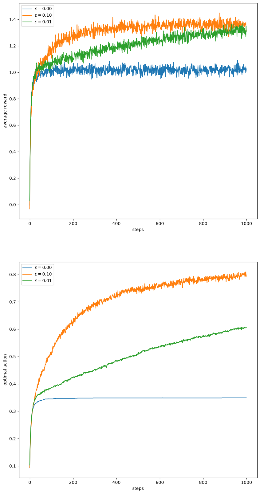
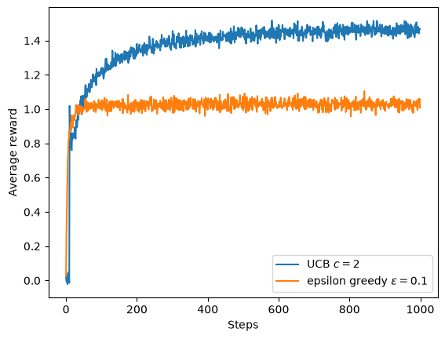
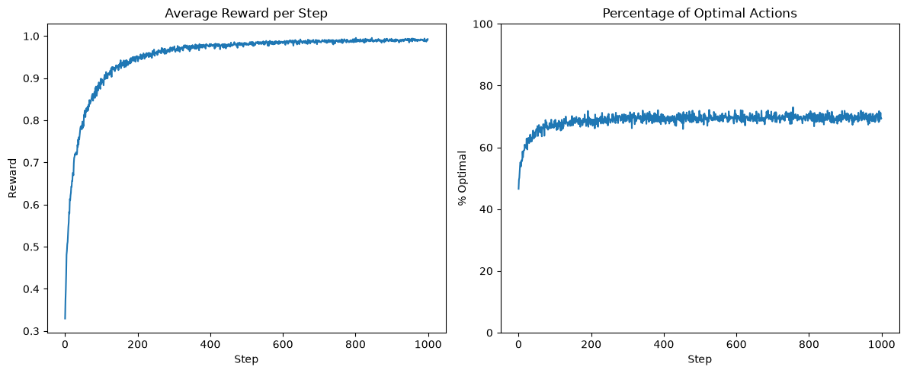

Code
from MAB_Agents import *The exploration–exploitation dilemma is one of the fundamental challenges in deep reinforcement learning (RL). Agents must strike a trade-off between making decisions based on current beliefs or gathering more information. If we have learned all the information about the environment, we are able to find the best strategy by even just simulating brute-force, let alone many other smart approaches. The dilemma comes from the incomplete information: we need to gather enough information to make best overall decisions while keeping the risk under control. With exploitation, we take advantage of the best option we know. With exploration, we take some risk to collect information about unknown options. The best long-term strategy may involve short-term sacrifices. For example, one exploration trial could be a total failure, but it warns us of not taking that action too often in the future. Thus, we want strategies that exploit what we think are the best actions so far, but still explore other actions. The exploration vs. exploitation tradeoff is often studied under more general models such as MDPs.
If we knew the value of each action, then it would be trivial to solve the k-armed bandit problem: we would always select the action with highest value. We assume that you do not know the action values with certainty, although you may have estimates. We denote the estimated value of action \(a\) at time step \(t\) as \(Q_t(a)\). We would like \(Q_t(a)\) to be close to \(q_*(a)\).
The (\(\epsilon\))-Greedy Methods
The simplest action selection rule is to select one of the actions with the highest estimated value, that is, one of the greedy actions. If there is more than one greedy action, then a selection is made among them in some arbitrary way, perhaps randomly. We write this greedy action selection method as
Greedy action selection always exploits current knowledge to maximize immediate reward; it spends no time at all sampling apparently inferior actions to see if they might really be better. A simple alternative is to behave greedily most of the time, but every once in a while, say with small probability \(\epsilon\), instead select randomly from among all the actions with equal probability, independently of the action-value estimates. We call methods using this near-greedy action selection rule \(\epsilon\)-greedy methods.
We structure our code with a main ABC class (Base Bandit). Every algorithm represents a subclass that inherits from the main class. The environemnt structure represents the environment associated with each algorithm.
from MAB_Agents import *from abc import ABC, abstractmethod
import matplotlib.pyplot as plt
import numpy as np
from scipy.stats import beta
from tqdm import trange
from environment import (
BanditEnvironment,
BernoulliBanditEnvironment,
GaussianBanditEnvironment,
)
class Base_Bandit(ABC):
# @k_arm: # of arms
# @epsilon: probability for exploration in epsilon-greedy algorithm
# @initial: initial estimation for each action
# @step_size: constant step size for updating estimations
# @sample_averages: if True, use sample averages to update estimations instead of constant step size
def __init__(
self,
env: BanditEnvironment,
epsilon=0.0,
initial=0.0,
step_size=0.1,
sample_averages=False,
):
self.env = env
self.k = env.num_actions
self.step_size = step_size
self.sample_averages = sample_averages
self.indices = np.arange(self.k)
self.epsilon = epsilon
self.initial = initial
self.average_reward = 0
self.time = 0
# estimation for each action
self.q_estimation = np.zeros(self.k) + self.initial
# # of chosen times for each action
self.action_count = np.zeros(self.k)
def reset(self):
# estimation for each action
self.q_estimation = np.zeros(self.k) + self.initial
# # of chosen times for each action
self.action_count = np.zeros(self.k)
self.time = 0
self.average_reward = 0
# get an action for this bandit
@abstractmethod
def act(self) -> int:
pass
# take an action, update estimation for this action
def step(self, action):
# generate the reward under N(real reward, 1)
reward = self.env.get_reward(action)
self.time += 1
self.action_count[action] += 1
self.average_reward += (reward - self.average_reward) / self.time
if self.sample_averages:
# update estimation using sample averages
self.q_estimation[action] += (
reward - self.q_estimation[action]
) / self.action_count[action]
else:
# update estimation with constant step size
self.q_estimation[action] += self.step_size * (
reward - self.q_estimation[action]
)
return rewardimport random
from abc import ABC, abstractmethod
import numpy as np
class BanditEnvironment(ABC):
"""Abstract base class for bandit environments"""
def __init__(self, num_actions: int):
self._num_actions = num_actions
self._best_action = None
@abstractmethod
def reset(self):
pass
@abstractmethod
def get_reward(self, action) -> float:
pass
@property
def best_action(self):
return self._best_action
@property
def num_actions(self):
return self._num_actions
class GaussianBanditEnvironment(BanditEnvironment):
def __init__(self, num_actions: int = 10, true_reward: float = 0.0):
super().__init__(num_actions)
self.true_reward = true_reward
self.q_true = np.random.randn(self.num_actions) + self.true_reward
self._best_action = np.argmax(self.q_true)
def reset(self):
self.q_true = np.random.randn(self.num_actions) + self.true_reward
self._best_action = np.argmax(self.q_true)
def get_reward(self, action) -> float:
return np.random.randn() + self.q_true[action]
class BernoulliBanditEnvironment(BanditEnvironment):
def __init__(self, true_probs: list):
super().__init__(len(true_probs))
self.true_probs = np.array(true_probs)
self._best_action = np.argmax(true_probs)
def reset(self):
pass
def get_reward(self, action):
return 1 if random.random() < self.true_probs[action] else 0class EpsilonGreedy(Base_Bandit):
def act(self):
if np.random.rand() < self.epsilon:
return np.random.choice(self.indices)
q_best = np.max(self.q_estimation)
return np.random.choice(np.where(self.q_estimation == q_best)[0])The upper figure compares a greedy method with two \(\epsilon\)-greedy methods (\(\epsilon\)=0.01 and \(\epsilon\)=0.1), on the 10-armed testbed. All the methods formed their action-value estimates using the sample-average technique. The upper graph shows the increase in expected reward with experience. The greedy method improved slightly faster than the other methods at the very beginning, but then leveled off at a lower level. It achieved a reward-per-step of only about 1, compared with the best possible of about 1.55 on this testbed. The greedy method performed significantly worse in the long run because it often got stuck performing suboptimal actions.
The lower graph shows that the greedy method found the optimal action in only approximately one-third of the tasks. In the other two-thirds, its initial samples of the optimal action were disappointing, and it never returned to it. The \(\epsilon\)-greedy methods eventually performed better because they continued to explore and to improve their chances of recognizing the optimal action. The \(\epsilon\) = 0.1 method explored more, and usually found the optimal action earlier, but it never selected that action more than 91% of the time. The \(\epsilon\) = 0.01 method improved more slowly, but eventually would perform better than the \(\epsilon\) = 0.1 method on both performance measures shown in the figure. It is also possible to reduce \(\epsilon\) over time to try to get the best of both high and low values.
figure_epsilongreedy(show=True)100%|███████████████████████████████████████████████████████████████████████████████████████████████████████████████████████████████| 2000/2000 [00:21<00:00, 93.53it/s]
100%|███████████████████████████████████████████████████████████████████████████████████████████████████████████████████████████████| 2000/2000 [00:20<00:00, 97.71it/s]
100%|███████████████████████████████████████████████████████████████████████████████████████████████████████████████████████████████| 2000/2000 [00:26<00:00, 76.55it/s]
figure_UCB(show=True)100%|███████████████████████████████████████████████████████████████████████████████████████████████████████████████████████████████| 2000/2000 [00:33<00:00, 59.18it/s]
100%|███████████████████████████████████████████████████████████████████████████████████████████████████████████████████████████████| 2000/2000 [00:24<00:00, 82.45it/s]
figure_TS(show=True)100%|██████████████████████████████████████████████████████████████████████████████████████████████████████████████████████████████| 2000/2000 [00:11<00:00, 175.98it/s]